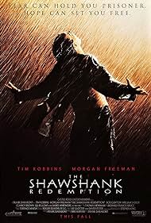
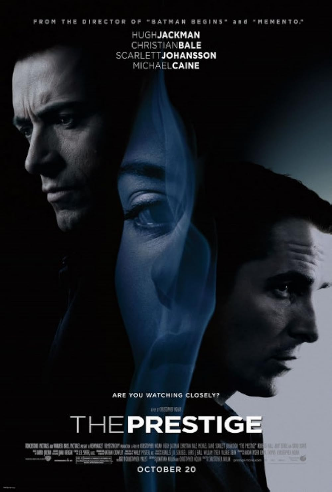

The Best Movies According to Aadithya
My top 3 movies of all-time.
A Silent Voice

This is my favourite anime movie.
Blade Runner 2049

Really cool and thrilling sci-fi movie.
Shawshank Redemption

Keeps you at edge of your seat the whole movie.
The Prestige

A very underrated,but an excellently done masterpiece yet again by the legend Christopher Nolan.
FUN FACT:- Clicking on the image will take you to the respective imdb pages of those movies